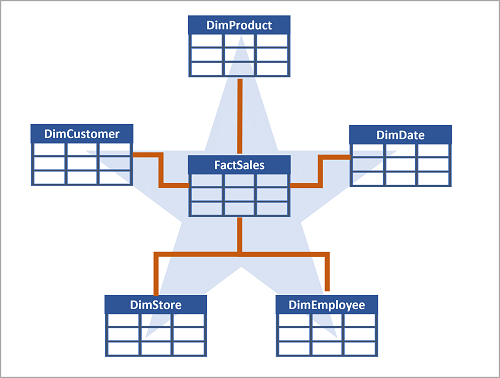
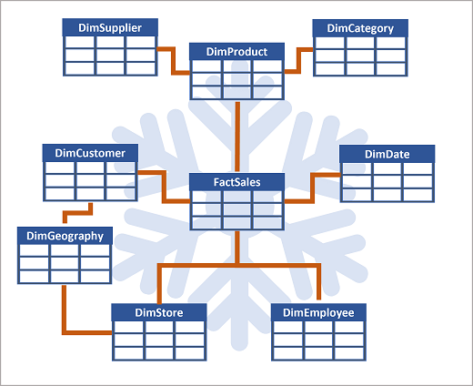
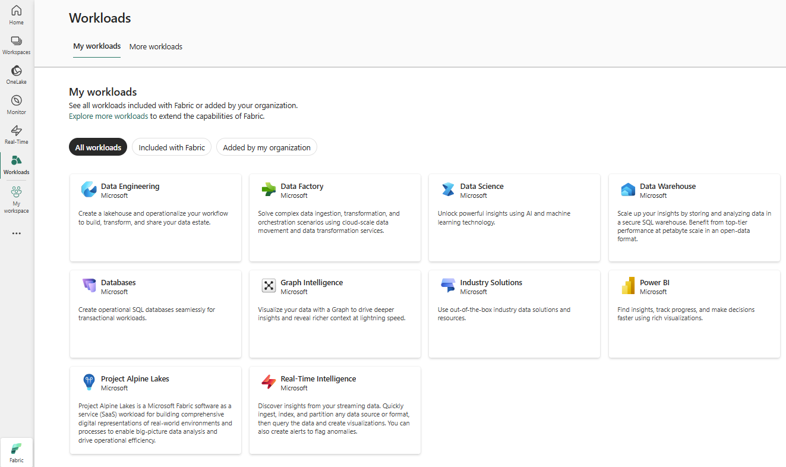
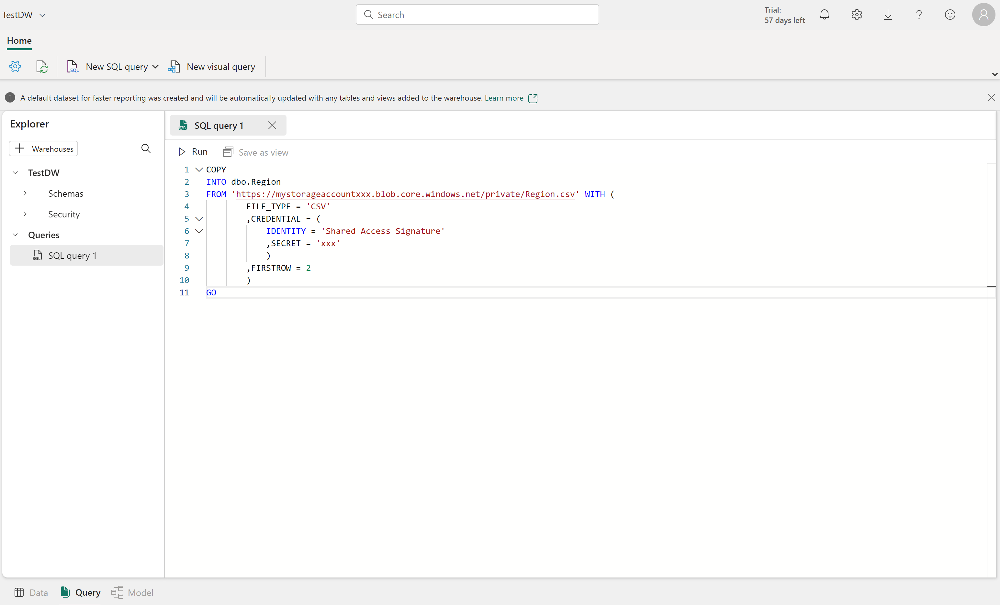
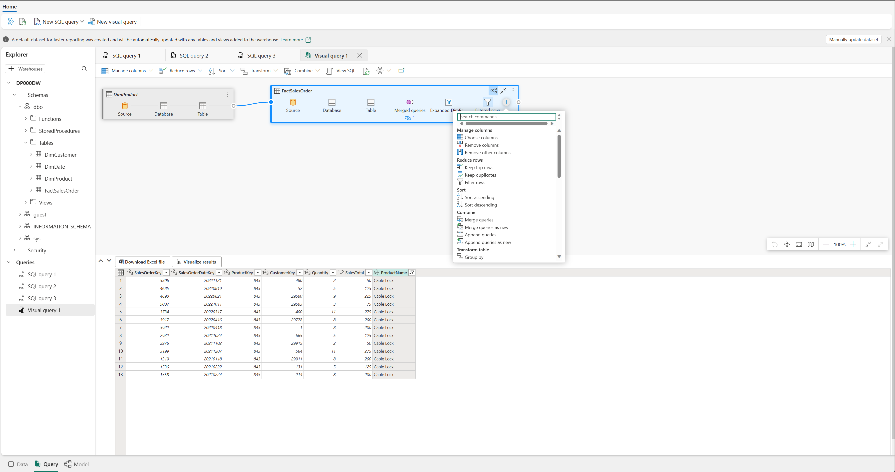
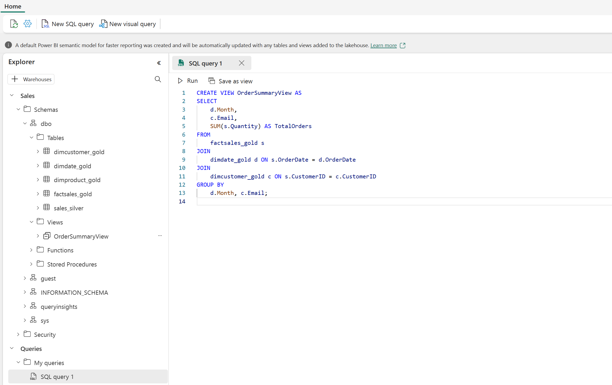
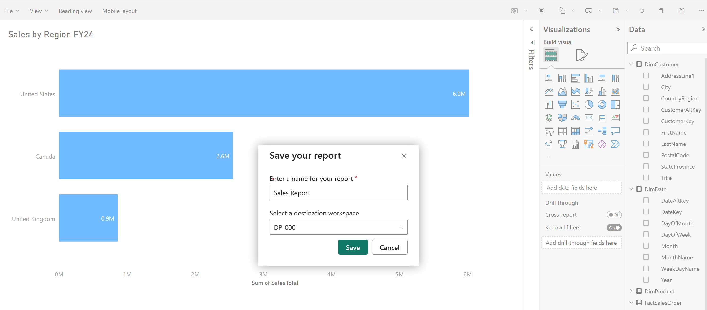

Data Warehouse Concepts
A data warehouse is a centralized, structured store designed for analytical queries and reporting. Unlike operational databases, it consolidates data from multiple sources into a format optimized for analysis.
Data ingestion — Moving data from source systems into the warehouse
Data storage — Storing the data in a format optimized for analytics
Data processing — Transforming data into a format ready for consumption by analytical tools
Data analysis & delivery — Analyzing data to gain insights and delivering them to the business
Fact Tables
Contain the numerical data you want to analyze
• Typically large number of rows
• Primary source of data for analysis
• Example: total amount paid for sales orders by date or store
Dimension Tables
Contain descriptive information about fact data
• Typically fewer rows, provide context
• Surrogate key — unique ID specific to the warehouse
• Alternate key — natural/business key from source system
• Both needed: surrogate for consistency, alternate for traceability
Special Dimension Types
Time dimensions — Year, quarter, month, day columns enabling aggregation over temporal intervals
Slowly changing dimensions — Track changes to attributes over time (customer address, product price), ensuring data stays current and accurate for decision-making
Star & Snowflake Schemas
In transactional databases data is normalized to reduce duplication. In a data warehouse, dimension data is denormalized to reduce the number of joins required to query the data.
Star Schema
Fact table relates directly to dimension tables
• Simpler structure, fewer joins
• Group fact numbers at different levels using dimension attributes
• Store information for each level in the same dimension table
Snowflake Schema
Dimension tables are further normalized into sub-dimensions
• Used when there are many levels or shared attributes
• Example: DimProduct splits into DimCategory + DimSupplier
• DimGeography shared by DimCustomer and DimStore

Star schema — a fact table relates directly to dimension tables

Snowflake schema — dimension tables normalized into sub-dimensions
Fabric Data Warehouse
A fully managed, enterprise-scale relational database built on OneLake with full transactional T-SQL capabilities (DDL + DML + MERGE) and full ACID compliance.
Full T-SQL support — DDL and DML statements, including MERGE for upsert scenarios, using familiar SQL Server syntax
Fully managed — No infrastructure to configure; compute scales automatically and independently from storage
OneLake integration — Data stored in Delta format, accessible by other Fabric workloads without duplication
Cross-database querying — Three-part naming (database.schema.table) to join warehouse and lakehouse tables in a single query
Familiar tooling — SSMS, Azure Data Studio, any SQL client via standard TDS connections
Copilot assistance — Generates SQL from natural language, code completion, explain/fix existing queries

Creating a data warehouse from the Fabric create hub
Ingest & Load Data
Several ways to load data into a Fabric data warehouse:
Staging Pattern
Staging tables — Land raw data in staging tables that mirror source structure, then transform and insert into final dimension/fact tables
Key lookups — Join staging data with dimension tables to resolve surrogate keys during the load process
Source integrity — Keeps source data intact while applying business rules during transformation
Table Clones
Zero-copy clones — Copy table metadata while referencing the same underlying OneLake data files; no storage duplication
Use cases — Development and testing, data recovery after failed releases, point-in-time snapshots for historical reporting

SQL query editor — creating tables and loading data with T-SQL
Query & Transform Data
Two tools for exploring and shaping data for analytics:
SQL Query Editor
IntelliSense, code completion, syntax highlighting, client-side parsing and validation
• Familiar experience for SSMS / Azure Data Studio users
• Copilot generates queries from natural language, completes code, explains/fixes queries
Visual Query Editor
No-code experience similar to Power Query diagram view
• Drag tables onto canvas
• Use Transform menu or (+) button for columns, filters, transformations

Visual Query Editor — no-code data transformation
Views & Stored Procedures
Views — Saved queries referenced like tables; standardize how analysts access data (combining fact + dimension tables, filtering by business context)
Stored procedures — T-SQL logic executed on demand for repeatable transformation tasks (loading staging data, applying business rules)
AI accessibility — Copilot and Fabric IQ data agents can query views just like tables; well-named views improve natural language query accuracy

Creating a view in the SQL Query Editor
Data Modeling in a Warehouse
Data modeling embeds structure, business logic, and documentation directly into the warehouse. Modeling choices affect T-SQL queries, Power BI reports, and AI-driven natural language analytics.
Prepare Data for Consumption
Hide internal objects — staging tables, surrogate key columns, ETL artifacts that clutter the field list
Rename columns — Use business-friendly names (e.g., CustRgn → Customer Region)
Add descriptions — Help consumers understand data without external documentation; improves Copilot and data agent accuracy
Relationships
Cardinality — How rows correspond; fact-to-dimension is typically many-to-one
Cross-filter direction — Single direction (dimension filters fact) is standard for star schemas; keeps filter behavior predictable and performant
AI impact — Data agents use relationships to generate accurate joins when translating natural language to SQL
Views & Measures
Views (T-SQL)
Encapsulate join logic, filters, and column selections. Provide a consistent shape for reports and T-SQL consumers. Stable data sources that insulate reports from base table changes.
Measures (DAX)
Reusable DAX expressions defining calculations (totals, averages, ratios). Single source of truth for metrics. Update once when business logic changes rather than tracking down every report.
Semantic Models & Direct Lake
Direct Lake mode — Reads data directly from OneLake Parquet files; no import/copy, reports always reflect latest warehouse data
No scheduled refreshes — Eliminates storage and processing overhead of maintaining a separate data copy

Power BI report built on a warehouse semantic model with Direct Lake mode
Security & Monitoring
Multiple layers of protection and visibility tools to control access and understand query performance.
Monitoring
Query insights — 30-day historical query data via system views: exec_requests_history, long_running_queries, exec_sessions_history
Dynamic management views (DMVs) — Monitor active connections, sessions, and requests in real time (e.g., sys.dm_exec_requests)
KILL command — Terminate long-running sessions (requires workspace Admin role)
Security policies defined in T-SQL are enforced regardless of how data is accessed, including via Copilot and data agents.
Knowledge Check
Which type of table should an insurance company use to store supplier attribute details for aggregating claims?
Fact table
Dimension table
Staging table
What is a semantic model in the data warehouse experience?
A business-oriented data model that provides a consistent and reusable representation of data across the organization
A physical data model that describes the structure of the data stored in the data warehouse
A machine learning model used to make predictions based on data in the data warehouse
What is the purpose of item permissions in a workspace?
To grant access to all items within a workspace
To grant access to specific columns within a table
To grant access to individual warehouses for downstream consumption
What capability does a Fabric data warehouse provide that a SQL analytics endpoint does not?
Writing data using INSERT, UPDATE, DELETE, and MERGE statements
Reading data from tables and views using SELECT statements
Connecting with SQL client tools like SQL Server Management Studio
×